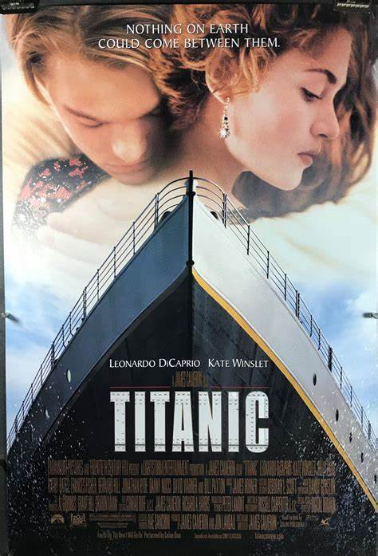

Movie 1
Titanic
Rating: 7.9/10
Synopsis
Keldysh and his team search the wreckage of the RMS Titanic for a necklace with a rare diamond, the Heart of the Ocean. They discover a safe containing a drawing of a young woman wearing the necklace, dated April 14, 1912. Rose Dawson Calvert, claiming to be the person in the drawing, visits Lovett and shares her experiences aboard the ship. Rose, angry and distraught about her mother's arranged marriage, considers suicide but Jack saves her. Cal offers Jack a small amount of money, and they develop a tentative friendship. Rose secretly joins Jack at a party in third class, and Cal's butler sneaks down to spy on her. Rose later realizes she prefers Jack over Cal and takes Jack to her state room to display Cal's engagement present. Cal orders the butler to find Rose, and they have sex in an automobile inside the cargo hold.
In the Titanic, an iceberg hits the ship, causing significant damage to watertight compartments and causing the ship to sink. The ship's builder, Thomas Andrews, warns that due to a design flaw, water will spill over the bulkheads at E Deck, causing the ship to sink. Cal discovers Jack's sketch of Rose and a mocking note from her, leading to his arrest and handcuffing. Rose is desperate to free Jack, and Cal rescues him. They board a lifeboat, but Cal is denied access to the lifeboat due to a previous arrangement. Cal then chases Rose and Jack into the flooding dining saloon, where they are trapped. Cal decides to escape, but is denied access by the First Officer. As the stern rises out of the water, Jack and Rose climb over the rail to take positions on the stern. The ship breaks in half, causing the stern to crash into the water and killing Lovejoy, the butler. Jack and Rose ride the stern into the ocean, where it plunges to the bottom. As they let go of the stern, the Titanic disappears into the darkness below them. Rose and Jack find a piece of paneling from the Grand Staircase and Jack assures her that she will die an old woman.